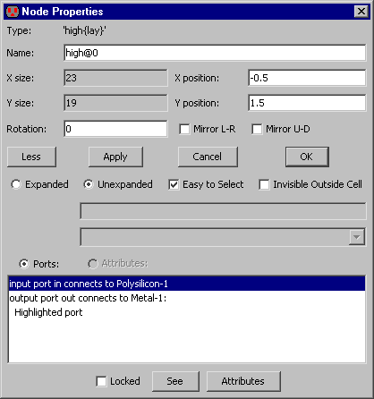
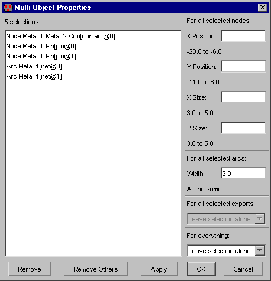

|
Другой способ перемещать узел состоит в том, чтобы
использовать Object Properties... (в меню Edit / Properties), и ввести новые значения X и Y. Это
диалоговое окно позволяет другим параметрам быть измененными также
(ориентация, и т.д.)
Диалоговое окно показывает местоположение привязки узла.
|  |
Диалоговое окно также имеет поле для ввода имени узла. Это имя не связано с
сетевой информацией, но может быть использовано для идентификации. Если
схематическому узлу дают множественное имя (типа "and [0:3] ") тогда это
означает, что узел создается много раз. Узлам (и проводам) автоматически
присваиваются уникальные имена (например "nmos@0").
Это диалоговое окно является немодальным: оно может остаться на экране, в то
время как происходит другое редактирование. Если выбран другой узел , диалоговое
окно показывает информацию нового узла. Кнопка "Apply" изменяет выбранный узел,
в соответствие с новыми значениями, введенными в диалоговое окно.
Object Properties
... диалоговое окно может
расшириться, чтобы показать более подробную информацию. Когда кликают по кнопке
"More" , окно расширяется (на рисунке).
|
Развернутое окно Object Properties ... имеет много новых параметров, которые
изменяются согласно типу выбранного узла:
- "Expanded" и " Unexpanded" показывает, как узел нарисован (если это - образец ячейки). Расширенный образец - тот, который показывает его содержимое; нерасширенный образец показан как " черный ящик " (см.
Раздел 3-4).
- "Easy to select" , показывает можно ли выбрать узел простым кликом. Эта особенность позволяет Вам устранять части схемы от активного редактирования (см
Раздел 2-1-5).
|  |
- "Invisible Outside Cell" показывает, что этот узел не будет показан, когда текущая ячейка будет рассматриваться на более высоком уровне иерархии.
- "Lоcked" узлы не могут быть изменены (перемещены, удалены).
Начало расширенных
Object Properties ... диалоговое окно имеет область прокрутки, в которой
можно видеть "Ports" или "Attributes". По умолчанию, выводится список портов
узла, включая любой экспорт, подключения, и подсвеченные части. Если кнопка
"Attributes" выбрана, выводится список атрибутов узла. Когда "Attributes"
выбран, входы в списке позволяют Вам изменять индивидуальные значения. Обратите
внимание, что есть также кнопка "Attributes", которая выводит полное диалоговое
окно для редактирования(атрибутов)..
Если выбрано много объектов, Вы
можете переместить их на определенное расстояние с помощью команды
Move Objects By┘ (в меню Edit
/ Move).
|  |
Е сли выбрано много узлов,
команда Properties ... перечислит их всех, и позволит изменить позицию
и размеры всей группе. Если позиция и размера появляются в диалоговом
окне, это значит, что это значение одинаковое на каждом выбранном узле.
Если поле чистое, это означает, что есть различные значения.
Изменения происходят только в полях, где вы ввели значение. Чтобы
удалить пункт из списка (не из схемы, а только из списка) используют
кнопку "Remove". Чтобы удалить все кроме выбранного пункта, используют
"Remove Others". Если выбраны только два объекта, это диалоговое окно
показывает расстояние между их центрами. |
Диалоговое окно multi-object Properties ... также позволяет Вам изменять непринужденность выбора с помощью вкладки "For everything: "
(см. Раздел 2-1-5 больше о стилях выбора).
W). Когда выбрано много экспорта , диалоговое окно позволяет Вам изменять их характеристики с помощью вкладки "For all selected exports: " (см. Раздел 3-6-1
).